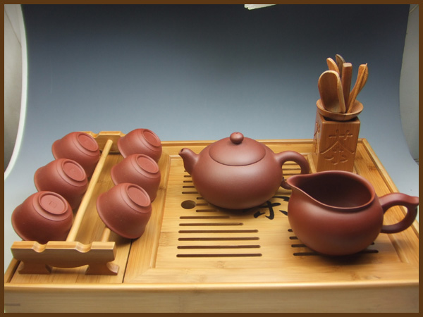

相册
- 
煎茶道
把茶末投入壶中和水一块煎煮。最早记述于宋代，有“吃茶”之说。流行于唐代。 法门寺出土的金质茶具，展现了唐代人“吃茶”的情形。茶叶经烘干后碾成粉末，和水一起煮，在煮茶时有时会加入盐等调料，喝茶时与茶叶一起喝下，所以又叫“吃茶”。 唐代的煎茶，是茶的最早艺术品尝形式。犹豫不决。
煮茶道
古代文人雅士各携带茶与水，通过比茶面汤花和品尝鉴赏茶汤以定优劣的一种品茶艺术。斗茶又称为茗战，兴于唐代末，盛于宋代。最先流行于福建建州一带。斗茶是古代品茶艺术的最高表现形式。其最终目的是品尝，特别是要吸掉茶面上的汤花，最后斗茶者还要品茶汤，做到色、香、味三者俱佳，才算斗茶的最后胜利。
工夫茶道
清代 至今某些地区流行的工夫茶是唐、宋以来品茶艺术的流风余韵。清代工夫茶流行于福建的汀州、漳州、泉州和广东的潮州。后来在安徽祁门地区也有盛行。工夫茶讲究品饮工夫。饮工夫茶，有自煎自品和待客两种，特别是待客，更为讲究。